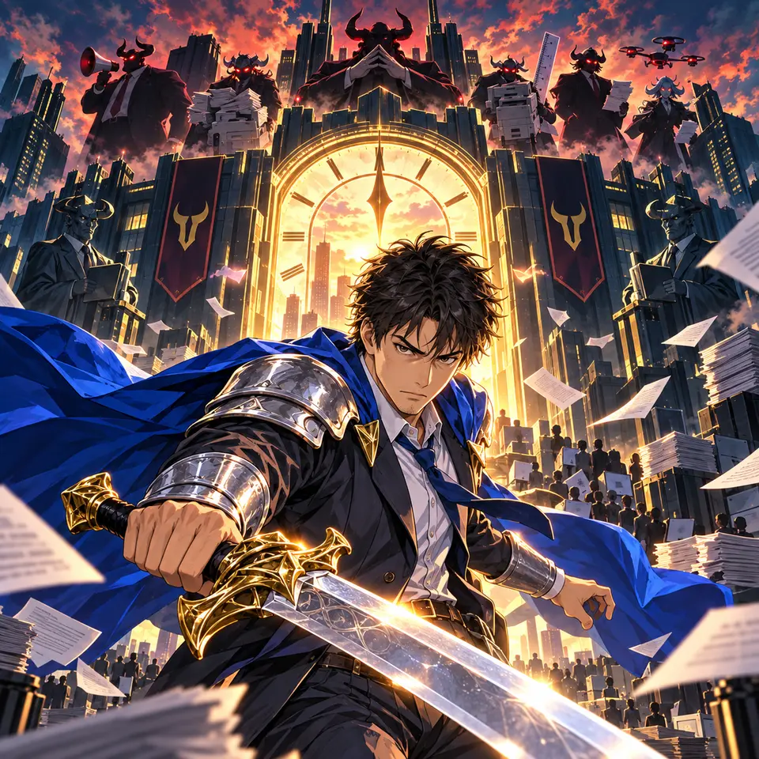

気力100
必殺0%
出勤前魔王商事17:45 → 18:00
定時まで9:00
設定
魔王部長
500
ボス撃破！ あとは退勤しよう！緑の矢印と光の道 → 退勤ゲートに入る


魔王商事 / 17:45
定時で帰りたい勇者
移動に集中し、自動攻撃で仕事を切り開こう。

1 / 4
魔王商事、17時45分。
タップまたはEnterで進む画面を触って移動。攻撃は自動です。

移動に集中し、自動攻撃で仕事を切り開こう。